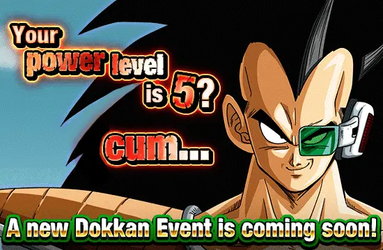
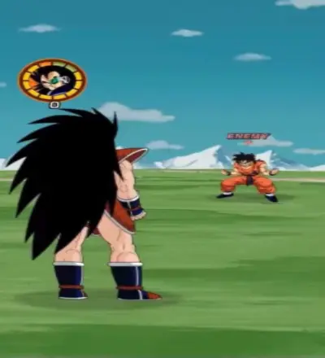

eu sei que nem preciso falar desse cara, todo mundo já conhece o melhor card do jogo, mas vamo lá né
pra começo de conversa, o raditz é um card que foi lançado
agora, por favor, segure suas lágrimas, eu sei que você já se emocionou, mas eu irei descrever tudo que o raditz tem

o [unveiling of power] raditz phy tem: um nome, uma cor, uma classe (que é extreme, assustador), tem uma arte, tem efeitos na arte, um sticker na arte, um título, uma passiva, um super attack, links, categorias, uma leader skill e até mesmo uma active skill, oq mais vc poderia pedir de um card????
pensa, o raditz só não tem uma intro, pq sabiam que seria demais e nossas mentes não conseguiriam compreender tamanha grandiosidade.
sobre a sua habilidade passiva "raditz's enforcement", o [unveiling of power] raditz phy tem 150% de atk e def, o que não faz sentido já que infinito multiplicado por qualquer coisa é infinito
ele também faz algo: ele aumenta seu atk e def novamente simplesmente fazendo um super attack!! onde mais você vai achar um card com buffs tão fáceis?? por sinal esse buff só é ativado se tiver 1 inimigo, afinal, todos os outros tremeriam de medo dele e abandonariam a partida
pra ter uma passiva ainda mais completa, o [unveiling of power] raditz phy dá crítico garantido se ele tomar um golpe, só pra humilhar o oponente por tentar encostar nele
e pra finalizar, ele ainda ganha um esplêndido, incrível, fantástico ki+2 quando matar um inimigo, que sempre acontece já que ele respira e todo mundo morre né

o [unveiling of power] raditz phy tem um super attack que ataca todos os inimigos de uma vez.
"ué, mas ele não só ganha buffs se estiver contra um inimigo apenas??", sempre vão fazer essa pergunta, ignore, o [unveiling of power] raditz phy não precisa disso.
e caso algum inimigo ouse te atacar 3 vezes, você pode usar a insana active skill que dá 2050 radilhões de dano em tudo, simplesmente quebrado
já se tornou claro que o [unveiling of power] raditz phy é certamente, indubitavelmente, incontestavelmente, um card.
"preciso falar mais sobre esse personagem? meu mano é simplesmente perfeito em todos os aspectos, ele é ótimo líder para qualquer categoria, as diferentes passivas dele são úteis em qualquer evento, seja fácil ao mais difícil, ele arrebenta em qualquer evento, é simples assim, o zamasu sente medo dele, sem falar no dano dele que é absurdo, a cada crítico é um hit kill diferente, dokkan nunca vai superar esse personagem."
- by teagores
"o raditz phy (irmão de goku) (filho de bardock) (filho da mãe do goku) (tio de gohan) é um personagem incrível afinal ele é o único personagem que não tem dano e nem defesa e eu achei isso muito criativo realmente a akatsuki se superou para fazer esse personagem, então o raditz phy (irmão de goku) (filho de bardock)(filho da mãe do goku) (tio de gohan) é sim um personagem."
- by dollyinho
"raditz phy é um personagem que obviamente faz parte da família do goku. e olha que bacana, ele tem ataque em área, que faz ele ser usável num world tournament."
- by auã
agradeço as participações especiais, o raditz merece.